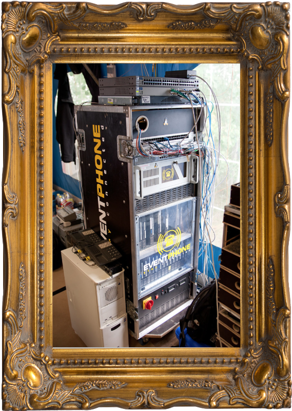

PoC History

Christoph Schirner, 2011
Fotografie in Farbe, DSLR
Sammlung Flickr, Internet
© VG Wurst-Brot, Bielefeld 2020
Geschichte:
https://de.wikipedia.org/wiki/Phone_Operation_Center
Foto:
https://www.flickr.com/photos/pixelmurder/6047019046/